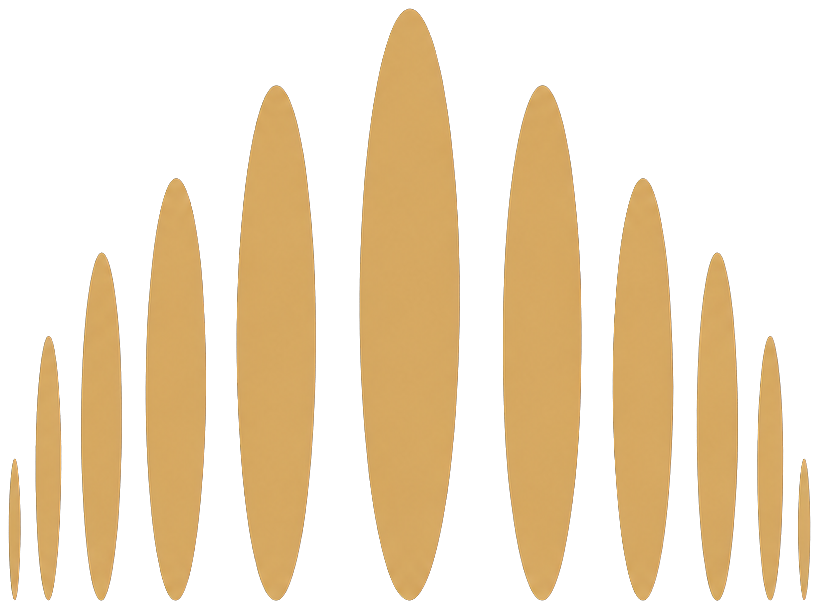

Гуманизм
Человек и его достоинство остаются главным ориентиром

МостыЕжегодная премия · Первый цикл 2026–2027
Поддерживаем инициативы, которые системно меняют жизнь людей и создают среду на долгом горизонте
Инфраструктура будущего
Премия ищет не самые громкие проекты, а те, за которыми стоят подтверждённая общественная значимость, профессиональная работа и потенциал долгого влияния
Она продолжает идеи, подход и ценности Рубена Варданяна и его партнёров: соединять гуманизм и профессионализм, доверие и долгий горизонт, идею и её воплощение
« Каждый сильный проект становится мостом: между человеком и возможностью, сегодняшним действием и будущим результатом
Человек и его достоинство остаются главным ориентиром
Системная работа, измеримый результат и стандарты качества
Способность сохранять курс и эффект в меняющейся среде
Знак премии раскрывается как путь: отдельные элементы соединяются, образуя мост и движение в будущее
Фильм-концепция · 10 секундОбраз арки становится пространством связи, а повторение формы — символом долгого действия
Три сферы, в которых человек взаимодействует с человеком Премия видит их как единую среду развития
Забота · доверие · поддержка
Инициативы, которые улучшают качество жизни и создают устойчивые системы помощи
Смысл · наследие · идентичность
Проекты, которые сохраняют, развивают и передают смыслы, формируя живую культурную среду
Знание · развитие · движение
Инициативы, раскрывающие потенциал человека и создающие новые траектории роста
Те, кто работает в благотворительности, культуре и образовании, не должны оставаться один на один с растущей сложностью
Премия соединяет признание, ресурс, связи и профессиональное сообщество — всё, что помогает проектам сохранять курс и усиливать влияние
Together
Проекты, где два и более партнёра создают взаимную ценность и результат, недостижимый поодиночке
People
Инициативы, которые развивают команды, создают новые профессиональные траектории и удерживают людей в секторе
System
Системные решения, которые усиливают не одну организацию, а целую среду помощи, культуры или образования
Mentor
Человек или организация, благодаря которым другие смогли вырасти, запустить новое и стать устойчивее
Каждая номинация открыта для инициатив из всех трёх направлений премии
Финансовая поддержка на уставную деятельность и развитие устойчивой работы
Публичность, которая помогает инициативе стать заметнее и убедительнее
Знакомство с партнёрами, экспертами, донорами и попечителями
Наставнические и образовательные программы для следующего этапа роста
25 мая 2026
Презентация концепции премии в Noôdome
Сентябрь–октябрь 2026
Старт первого номинационного цикла
Ноябрь 2026 – апрель 2027
Оценка заявок, формирование шорт-листа и работа жюри
Май 2027
Первые лауреаты и начало сообщества
Пространство доверия и партнёрства
Премия формирует круг доверия — людей и организаций, готовых давать сильным инициативам ресурс, связи и долгую опору
Партнёрство · патронство
экспертиза · сообщество